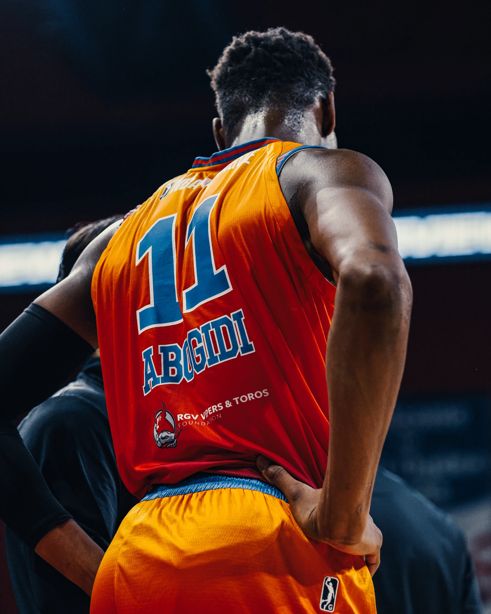

The official portfolio
Efemena
Abogidi.
Professional athlete. A global perspective.
A life shaped by basketball, education, and the places in between.
Discover my story
Nigeria · Senegal · Australia · United States · SpainExplore the portfolio
Different chapters. One journey.
More than one arena.
A glimpse of the game.
Beyond basketball
Curiosity.
Discipline.
Perspective.
My professional basketball career has taken me through Nigeria, Senegal, Australia, the United States, and Spain. Alongside it, I earned a bachelor’s degree in Anthropology with a minor in Geographic Information Science.
This portfolio brings those experiences together through my career, academic work, research, projects, and media.
Explore my work